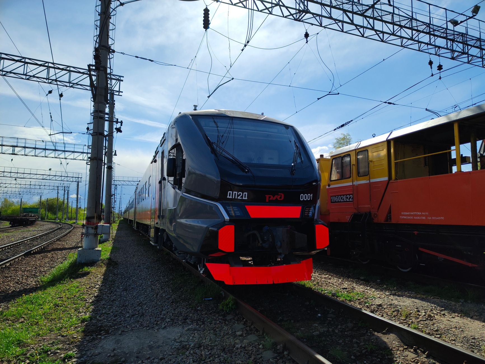

A narrow escape for international leaders
The geopolitical tension in Eastern Europe reached a new peak following a series of rapid developments at a major Ukrainian transit hub. Former British Prime Minister Boris Johnson, accompanied by several top European officials, had just concluded a high-stakes visit to the region. Their mission was to bolster morale and demonstrate unwavering Western support for Ukraine's sovereignty amidst the ongoing conflict.
As the diplomatic delegation boarded their transport and cleared the immediate vicinity of the station, the atmosphere shifted from one of cautious optimism to sudden chaos. The timing of the subsequent strike has raised significant questions regarding intelligence and the potential targeting of high-value political movements.
The details of the missile strike
Shortly after the departure of the international delegation, explosions rocked the railway infrastructure. Reports from the ground indicate that a Russian missile or drone strike directly impacted the station area, causing significant damage to the tracks and passenger facilities. The strike appeared to be aimed at critical logistics nodes used for both civilian and military movement.
Local emergency services worked tirelessly to secure the site and search for survivors. While the exact number of casualties remains under investigation, the destruction of the rail infrastructure serves as a grim reminder of the volatility of the current frontline dynamics.
Global reactions to the escalation
The international community has reacted with swift condemnation. Diplomatic circles in London and Brussels are closely analyzing whether the strike was a coincidental occurrence or a calculated attempt to intimidate Western leaders who continue to advocate for Ukrainian defense capabilities.
The timing of this attack is nothing short of provocative, aimed at sending a message to those who stand in solidarity with the Ukrainian people.
European officials have emphasized that such actions do not deter international cooperation but rather strengthen the resolve of the alliance. The consensus among NATO members is that the continuity of support must remain unshakeable despite these escalating tactical strikes.
Impact on civilian logistics and safety
Beyond the political implications, the strike has immediate and devastating consequences for the civilian population. Railways are the lifeblood of Ukrainian movement, facilitating the evacuation of refugees and the delivery of essential humanitarian aid. When a major station is hit, the ripple effects are felt hundreds of miles away.
The loss of rail capacity forces citizens to rely on more vulnerable road networks, which are often also under threat. This shift increases the difficulty of transporting food, medical supplies, and fuel to the regions that need them most during this period of intense instability.
Looking toward the uncertain future
As the dust settles on the station, the focus shifts to the long-term strategic implications of these strikes. The pattern of targeting infrastructure suggests a continued effort to degrade Ukraine's ability to function as a modern state. This creates a landscape of constant uncertainty for both the combatants and the global community.
In a world where rapid technological shifts and geopolitical instability collide, we must consider the broader risks to our global order. Much like how experts discuss the existential threats posed by emerging technologies, such as in the article AI Researcher Warns of Risks to Humanity's Future at https://dhyey.bond/blog/ai-researcher-warns-of-risks-to-humanity-s-future/, the current conflict highlights the fragility of our modern systems when faced with sudden, violent disruption.
The resilience of the Ukrainian people and the stability of the international response will likely determine the trajectory of the conflict in the coming months. All eyes remain on the diplomatic corridors and the frontlines for the next significant development.
See Also
If you enjoyed this Current Events article, check out AI Researcher Warns of Risks to Humanity's Future for more useful reading.